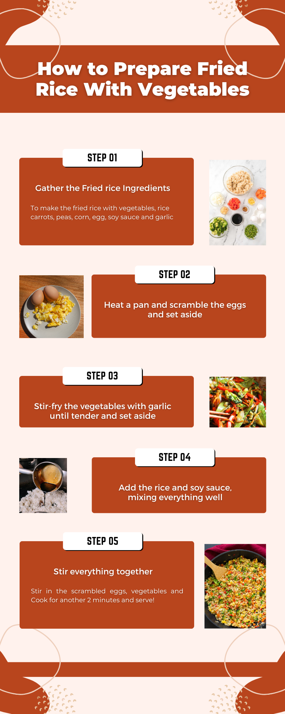

Detailed Insights
Learning Outcomes
This tutorial aims to teach learners how to prepare fried rice with vegetables while developing essential cooking and multimedia learning skills. The specific outcomes include:
- Cooking Skills: Learners will gain knowledge of ingredient selection, cooking techniques, and presentation skills.
- Self-Paced Learning: Learners will improve their ability to follow instructions at their own speed using multimedia tools.
- Reflective Practice: By sharing feedback and photos/videos, learners engage in reflection, reinforcing their knowledge through hands-on application.
How Theories Were Implemented
- Cognitive Load Theory: The tutorial is structured into clear sections, ensuring learners focus on one concept at a time.
- Dual Coding Theory: Visuals and text (e.g., infographic) complement the video and narration to enhance understanding.
- Personalization Principle: A conversational tone in the tutorial makes the learning experience more relatable.
- Constructivist Theory: Learners actively engage by cooking and reflecting on their experience.
- Experiential Learning: Hands-on cooking experience followed by reflection through feedback submission helps learners solidify their understanding.
- Self-Regulated Learning: The tutorial allows learners to control their pace by pausing, rewinding, or re-reading sections.
What Audience Will Gain
- Practical Knowledge: They will learn how to prepare a healthy and delicious dish.
- Multimedia Literacy: Exposure to videos, infographics, and interactive forms enhances their ability to learn through multimedia.
- Critical Thinking: Reflecting on their cooking results and sharing feedback develops their analytical and evaluative skills.
- Confidence: Successfully preparing the dish will build learners’ self-confidence, encouraging them to tackle more complex recipes.
How This May Be Evaluated
The effectiveness of this tutorial can be evaluated through:
- Feedback Form Submissions: Learners can upload photos/videos of their fried rice, showcasing how well they followed the tutorial.
- Survey Responses: The feedback form includes a section for learners to share whether the tutorial was clear, helpful, and engaging.
- Completion Metrics: Analyzing how many learners watch the entire video or interact with all sections of the tutorial can indicate engagement levels.
- Peer Reviews: Students in a multimedia class could evaluate each other's submissions, fostering collaborative learning.
What Other Topics Could Use This Same Manner
- Fitness Routines: Step-by-step guides for home workouts with videos demonstrating proper form.
- DIY Projects: Tutorials for creating crafts or fixing household items using a mix of infographics and videos.
- Language Learning: Interactive lessons combining visuals, audio clips, and practice exercises.
- Art Techniques: Tutorials for painting, sketching, or digital design that blend visual examples and written steps.
- Personal Finance: Guides on budgeting or saving money, enhanced with charts and interactive calculators.
Areas That Did Not Go to Plan
- Technical Issues: Lighting inconsistencies during video recording required extra editing to maintain visual clarity.
- File Size: The video and infographic files were larger than expected, making loading times slower.
- Engagement Gap: Not all viewers may participate in the feedback process. A reward or incentive system could be introduced to encourage more submissions.
- Accessibility Concerns: The content relies heavily on visuals and might not be fully accessible to learners with visual impairments. Adding captions and alternative text descriptions could address this issue in future iterations.
List of Skills You Will Attain
- Cooking Skills: From basic ingredient preparation to advanced flavor balancing, learners will master a practical and useful skill.
- Digital Literacy: Navigating multimedia resources like videos and interactive forms enhances their technical capabilities.
- Time Management: Following the segmented tutorial helps learners plan their cooking process efficiently.
- Problem-Solving: Handling unexpected cooking challenges (e.g., adjusting seasoning) fosters adaptability.
- Feedback Skills: Evaluating their results and sharing constructive feedback encourages critical thinking and communication.
Tutorial
Ingredients
- 2 cups of cooked rice
- 1 cup of mixed vegetables (carrots, peas, corn)
- 2 eggs
- 2 tablespoons soy sauce
- 1 clove of garlic, minced
Steps
- Prepare your ingredients: chop vegetables, cook the rice if not already done.
- Heat a pan and scramble the eggs. Set aside.
- Stir-fry the vegetables with garlic until tender.
- Add the rice and soy sauce, mixing everything well.
- Stir in the scrambled eggs. Cook for another 2 minutes and serve!
Infographic
Video Tutorial
Share Your Results and Feedback
We’d love to see your fried rice creations! Share a photo or video and let us know if the tutorial was helpful.